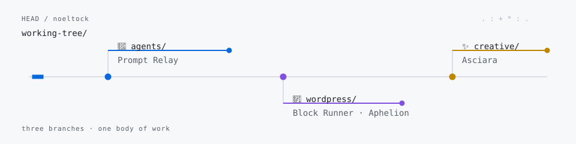

Hey, I'm Noel 👋
I build at the edge of WordPress × AI — tools that help agents do real work.
CGO at Human Made · AI notes · LinkedIn

What I'm making 🛠️
- 🧭 Prompt Relay — the right work to the right model.
- 🧱 Block Runner — generated HTML in; native Gutenberg blocks out.
- 🛰️ Aphelion — a flight recorder for WordPress agents.
- ✨ Asciara — ASCII with a little soul.
More from the tree 🌳
- Codex Review — review routing.
- Wesper — WordPress context.
- Accelerate AI Toolkit — WordPress experiments.
- The 5 Levels of Agentic WordPress — field note.
- tiltShift.js — CSS filters.